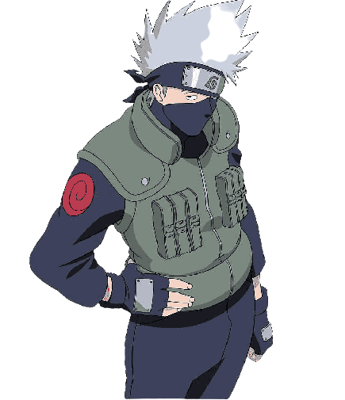

Какаши Хатаке
Анбу. Сен-Сей команды №7. Шестой Хокагэ

Какаши Хатаке (яп. はたけ カカシ Хатакэ Какащи) — шиноби Скрытого Листа из клана Хатаке. Более известный как Какаши Шарингана (яп. 写輪眼のカカシ, Щаринган но Какащи), благодаря подарку Обито Учихи. Является одним из самых талантливых ниндзя Конохи. В прошлом капитан Анбу, Какаши возглавляет Команду 7. После окончания Четвёртой Мировой Войны Шиноби Какаши становится Шестым Хокаге Конохи (яп. 六代目火影, Рокудаймэ Хокаге; досл. Шестая Тень Огня).
- Чидори (千鳥 , "Тысяча птиц") — техника, разработанная Хатаке Какаши, перед тем, как он стал Джонином. Затем он обучил ей Учиха Саске. При использовании этой техники Райтона, пользователь концентрирует чакру в своей руке, тем самым создавая сильный электрический сконцентрированный разряд. Законченная версия Чидори – Райкири. Саске также усовершенствовал эту технику.
- Хаккоджин (白光刃, "Клинок белого света") — Кендзюцу, при котором Какаши, используя Хакко Чакра То своего отца, наносит им рубящий удар по оппоненту.
- Шаринган (写輪眼, "Копирующий вертящийся глаз") — особенная техника, которой обладает клан Учиха.
- Мангекё Шаринган (万華鏡写輪眼, "Калейдоскоп копирующего вертящегося глаза") — расширенная форма Шарингана. По-видимому, чтобы его получить, нужно убить близкого человека или пережить похожую травму.
- Маген: Наракуми но Дзюцу (魔幻・奈落見の, "Демоническая иллюзия: Техника адского видения") — Гендзюцу, с помощью которого можно извлечь из памяти соперника его самый сокровенный страх и сделать из этого иллюзию.
- Райкири (雷切, "Режущий молнию") — техника, созданная Хатаке Какаши в детстве. Изначально техника называлась Чидори, путём тренировок Какаши усовершенствовал эту технику. Чидори, по сути – тот же Райкири, только у Райкири чакра более сконцентрирована, и Райкири требует более мощного контроля чакры. Таким образом, Райкири — это логическое завершение Чидори. Эту технику опасно использовать без Шарингана.
- Сусаноо (須佐能乎, "Тот, кто способен помочь всеми средствами") — очень мощная техника клана Учиха, которую можно использовать только имея Мангекё Шаринган, овладев как Аматерасу, так и Тсукуёми. При использовании этой техники создаётся призрачный самурай, который помогает пользователю в бою.